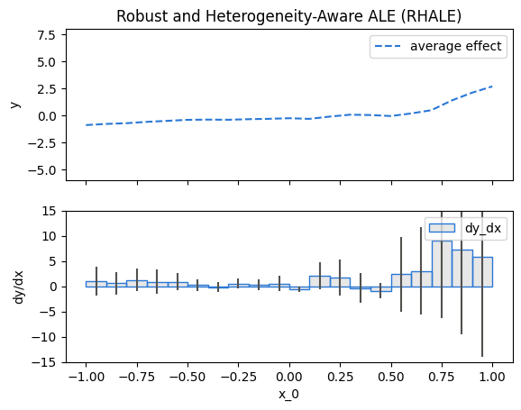
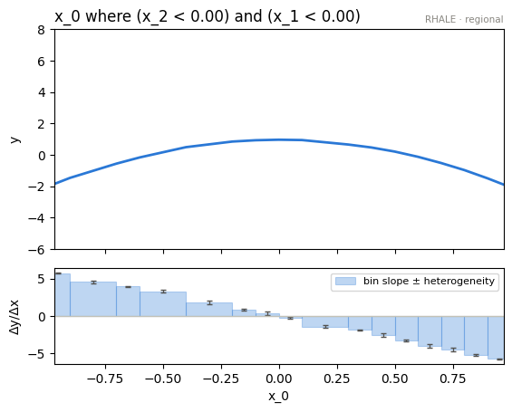
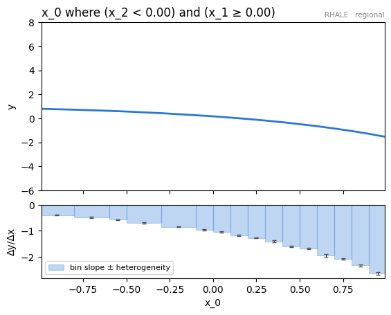
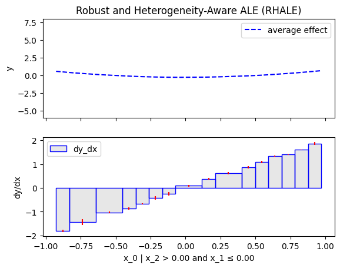
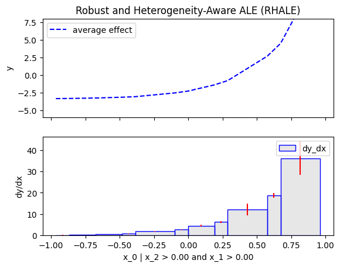
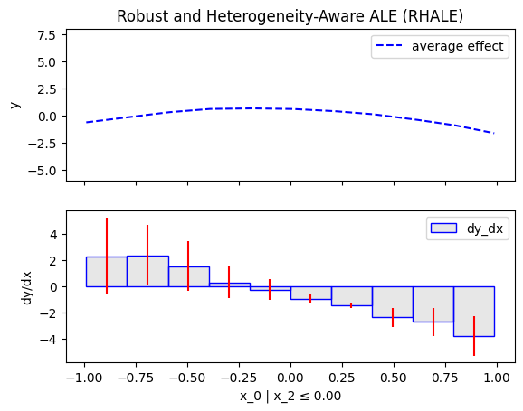
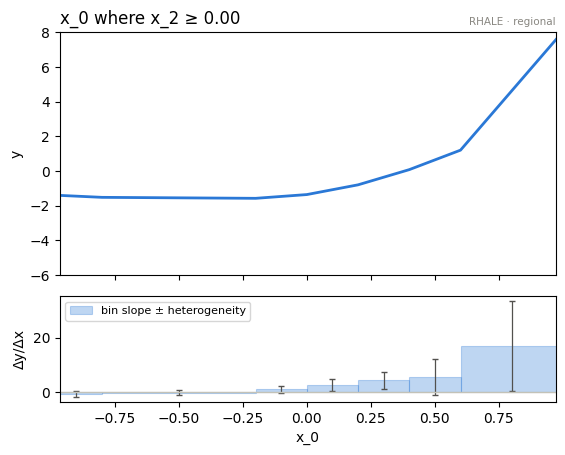

Customize .fit()
- Author: givasile
- Description: The flexible side of
effector: how to use.fit()to control the processing steps of each global or regional effect method — centering, binning, space partitioning — when the defaults are not enough.
Effector is designed to work well with its default settings,
but it also allows for customization if the user needs more control over the processing steps.
This flexibility is achieved through the use of the .fit() routine,
which offers a range of options for customizing each global or regional effect method
Dataset
Create a dataset with 3 features, uniformly distributed in the range [-1, 1].
dist = effector.datasets.IndependentUniform(dim=3, low=-1, high=1)
X_test = dist.generate_data(n=200)
axis_limits = dist.axis_limits
Black-box model and Jacobian
Construct a black-box model with a double conditional interaction: \(x_1\) effect interacts with \(x_2\) and \(x_3\).
model = effector.models.DoubleConditionalInteraction()
predict = model.predict
jacobian = model.jacobian
Global Effect
We will compute the global effect of the first feature using the RHALE method.
First, we will use the default settings of the .fit() routine, which automatically partitions the feature space into bins.
Then, we will customize the .fit() routine to use a number of 5 equal-width bins.
RHALE
rhale = effector.RHALE(X_test, predict, jacobian, axis_limits=axis_limits, nof_instances="all")
rhale.plot(feature=0, y_limits=y_limits, dy_limits=dy_limits)
{kind=link}

rhale = effector.RHALE(X_test, predict, jacobian, axis_limits=axis_limits, nof_instances="all")
rhale.fit(features=0, binning_method=effector.axis_partitioning.Fixed(nof_bins=5))
rhale.plot(feature=0, y_limits=y_limits, dy_limits=dy_limits)
{kind=link}
Regional Effect
Similarly, we will compute the regional effect of the first feature using the RHALE method.
We will first use the default settings of the .fit() routine, which automatically partitions the feature space into bins
and goes until depth=2 of the partition tree.
Then, we will customize the .fit() routine to use a number of 5 equal-width bins and go until depth=1 of the partition tree.
RHALE
init()
r_rhale = effector.RegionalRHALE(X_test, predict, jacobian, axis_limits=axis_limits, nof_instances="all")
r_rhale.summary(0)
rhale = effector.RHALE(X_test, predict, jacobian, axis_limits=axis_limits, nof_instances="all")
rhale.fit(features=0, binning_method=effector.axis_partitioning.Fixed(nof_bins=5))
rhale.plot(feature=0, y_limits=y_limits, dy_limits=dy_limits)
.summary() output
Feature 0 - Full partition tree:
🌳 Full Tree Structure:
───────────────────────
x_0 🔹 [id: 0 | heter: 60.47 | inst: 200 | w: 1.00]
x_2 ≤ 0.00 🔹 [id: 1 | heter: 2.36 | inst: 105 | w: 0.53]
x_1 ≤ 0.00 🔹 [id: 2 | heter: 0.06 | inst: 45 | w: 0.23]
x_1 > 0.00 🔹 [id: 3 | heter: 0.00 | inst: 60 | w: 0.30]
x_2 > 0.00 🔹 [id: 4 | heter: 70.28 | inst: 95 | w: 0.47]
x_1 ≤ 0.00 🔹 [id: 5 | heter: 0.00 | inst: 45 | w: 0.23]
x_1 > 0.00 🔹 [id: 6 | heter: 8.08 | inst: 50 | w: 0.25]
Feature 0 - Full partition tree:
Node id: 0, name: x_0, heter: 53.64 || nof_instances: 200 || weight: 1.00
Node id: 1, name: x_0 | x_2 <= 0.0, heter: 2.42 || nof_instances: 105 || weight: 0.53
Node id: 2, name: x_0 | x_2 > 0.0, heter: 61.95 || nof_instances: 95 || weight: 0.47
--------------------------------------------------
Feature 0 - Statistics per tree level:
Level 0, heter: 53.64
Level 1, heter: 30.70 || heter drop : 22.94 (units), 42.77% (pcg)
.plot()
node_idx=3: \(x_0\) when \(x_1 \leq 0\) and \(x_2 \leq 0\) |
node_idx=4: \(x_0\) when \(x_1 > 0\) and \(x_2 \leq 0\) |
|---|---|
 |
 |
node_idx=5: \(x_0\) when \(x_1 \leq 0\) and \(x_2 > 0\) |
node_idx=6: \(x_0\) when \(x_1 > 0\) and \(x_2 > 0\) |
 |
 |
{kind=link}
{kind=link}
{kind=link}
{kind=link}
rhale.plot(feature=0, node_idx=1, y_limits=y_limits, dy_limits=dy_limits)
rhale.plot(feature=0, node_idx=2, y_limits=y_limits, dy_limits=dy_limits)
node_idx=1: \(x_0\) when \(x_2 \leq 0\) |
node_idx=2: \(x_0\) when \(x_2 > 0\) |
|---|---|
 |
 |
{kind=link}
{kind=link}